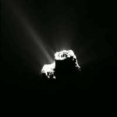
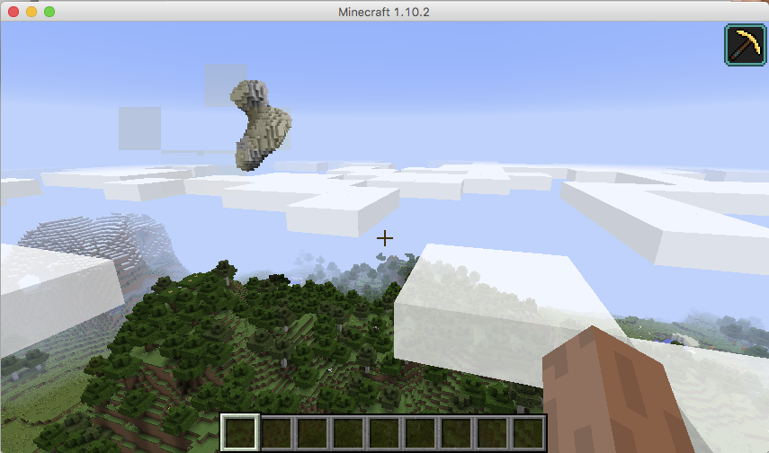
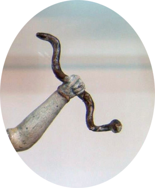
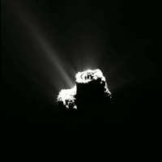
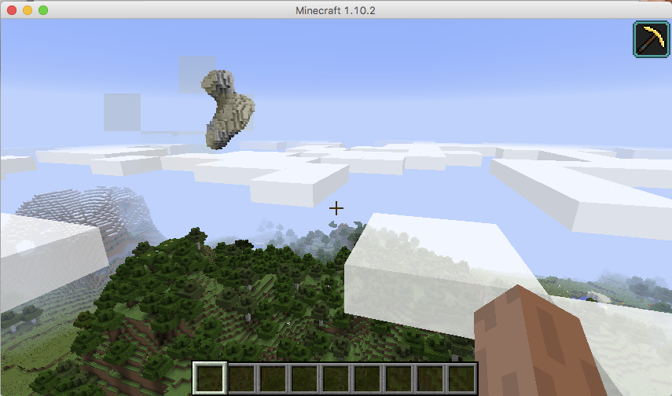
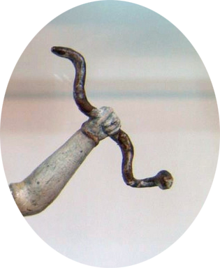

and it was yes
the case that it came again
the swirling bone
as it was predicted
everything being cyclical
even this
and to know then the winds would blow
a new way
but also to know that it was as it ever had been
even in the time that 67p had swung out
on its long arcing path
hello